The central observation of acquisition research:
Stages, not smooth improvement. Sometimes non-monotonic. Decades of acquisition research has documented this as the shape of learning.
Three phenomena from machine learning that look strikingly familiar:
Loss plateaus, then drops. Structure appears suddenly, not incrementally — and sometimes non-monotonically.
Same observation, different system. The shape of learning rhymes with what acquisition researchers have been describing for decades.
If models are candidate learners — traversing the same kind of stagewise developmental landscape we see in kids — then something striking follows:
But to take the bet seriously, we need a framework that lets us treat "stages" in a model rigorously — when one starts, when it ends, what changes between them. Classical learning theory can't give us one.
Classical statistics demands regular models:
Under these conditions, the Bernstein–von Mises theorem guarantees the posterior concentrates around a single unique minimum as data increases .
Regular model geometry
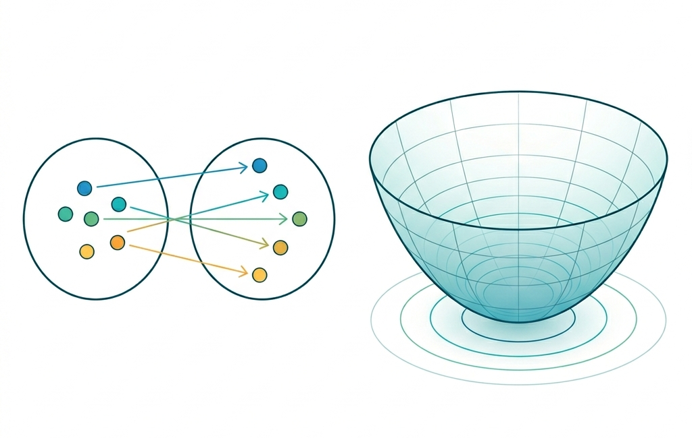
A marble rolling to the bottom of a perfectly smooth bowl. More data = tighter convergence.
Neural networks violate both requirements of regular models:
The loss landscape is not a bowl — it's a sprawling valley system where wildly different parameters share the exact same loss.
A single-hidden-layer autoencoder :
The model must choose: which features get faithful representation, and which get compressed into superposition?

The weight columns arrange as vertices of a regular polygon. Each is a distinct critical point:

Watanabe (2009): import algebraic geometry to handle singularities . The key tool: the Local Learning Coefficient (LLC, $\hat\lambda$)
Simple basins are occupied first (geometrically cheaper). The model transitions to more complex ones only when the free energy trade-off tips .
$\lambda(w)$ is the LLC, $n$ is the effective sample size (≈ training time).
The model's preferred basin changes over training. Not just minimizing loss — performing Bayesian internal model selection.
Investigated: In a toy model where the loss landscape is fully analytically tractable, how do phase transitions actually work — and does Bayesian model selection (the theory) match what SGD does (the practice)?
Found:
Tells us: SLT doesn't just describe singular models in the abstract — it makes concrete, observable predictions about how learning unfolds. Even SGD, which has nothing to do with Bayesian sampling, follows the free-energy script.
If Chen et al. is right that SLT governs real learning — not just an analytically tractable toy — then in a real transformer trained on real data, we should see:
These are testable. To test them, we need a way to measure the LLC in models too large to enumerate — and a behavioral framework for asking whether each transition means anything.
Hoogland et al. (2024) set out to do exactly this.
The toy superposition model has a clean, analytically tractable loss landscape. Do the same stagewise dynamics appear in more complex training environments?
To do this, we need a complexity measure that can differentiate between types of degeneracy — not just "is it flat?" but "how flat, and in what way?"
Test Loss & LLC over Training
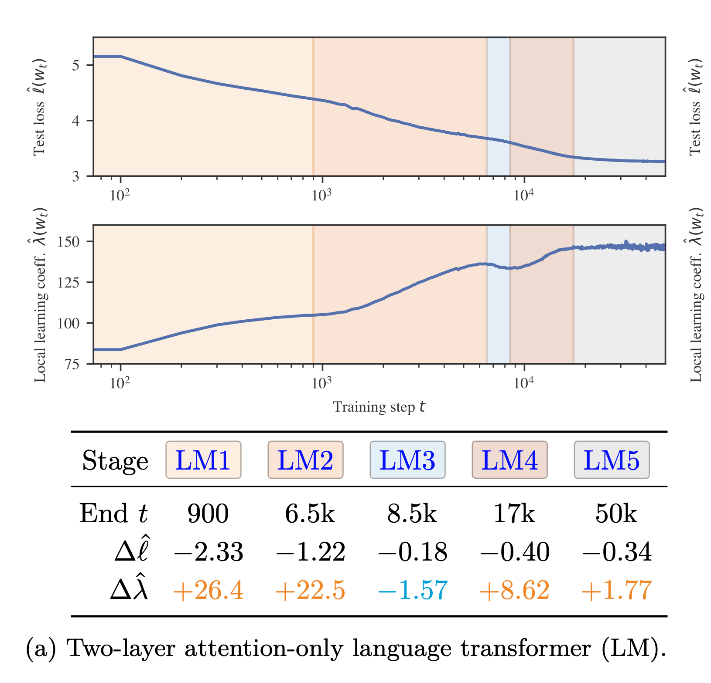
LLC Curve Derivative
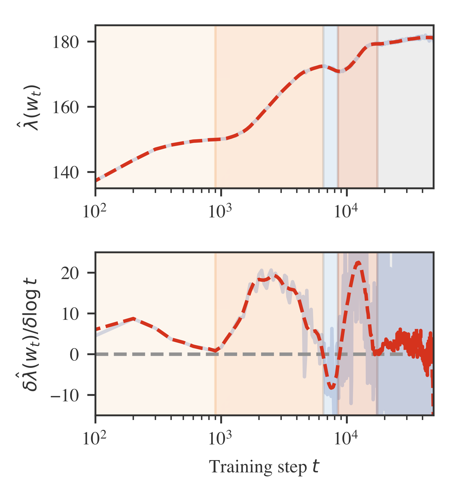
(a) The model's bigram score drops toward bigram entropy (dashed) — it learns raw token co-occurrence statistics. No sequence awareness yet.
(b) Test loss tracks the position-ablated loss closely — removing positional information makes no difference. The model isn't using word order.
Colored bands mark phase transitions identified by LLC jumps.
Bigram Score & Position Ablation
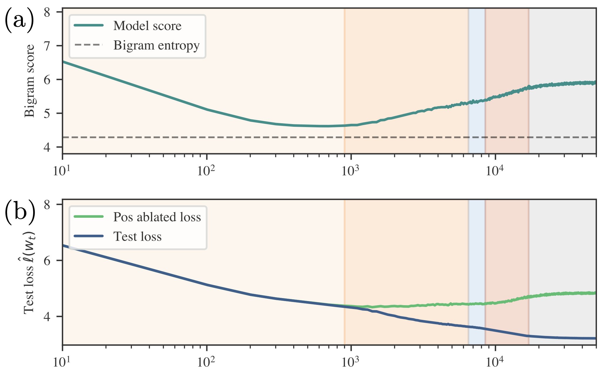
x-axis: training steps
(c) N-gram scores diverge from baseline — the model begins exploiting word order. 3-grams and 4-grams climb steeply after the first transition.
Test loss separates from position-ablated loss: positional information now matters. The model has developed sequence awareness.
N-gram Performance Over Training
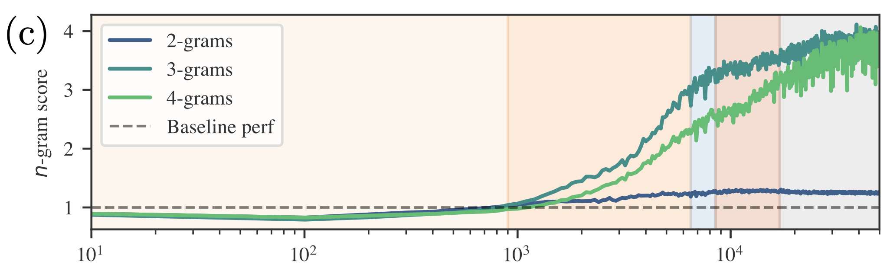
x-axis: training steps
(d) Previous token heads (layer 1) activate — foundational building blocks.
(e) Induction heads (layer 2) wire in — in-context learning emerges.
(f) ICL score improves as induction heads connect: "A B ... A → B" pattern completion .
Each circuit forms at a specific LLC transition — ordered, prerequisite-based.
Attention Head & ICL Scores
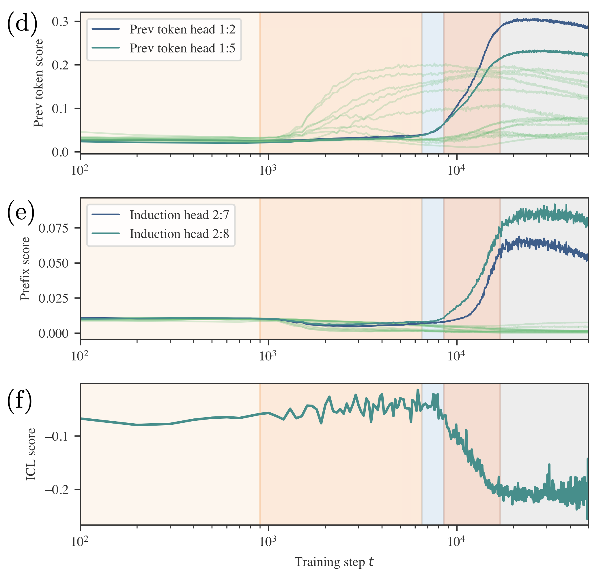
x-axis: training steps
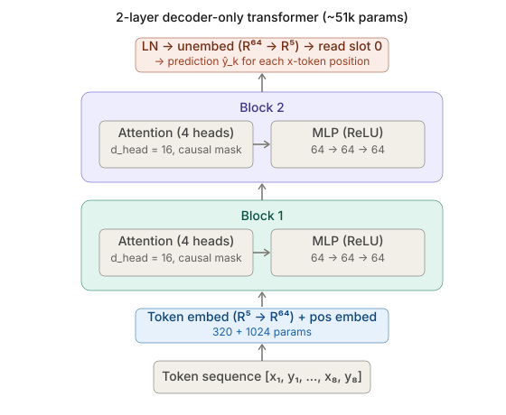

The transformer sees (x, y) pairs from a noisy linear function $y = t^\top x + \varepsilon$ and must predict each $y_i$ from preceding context. Per-token loss drops in stages — each corresponding to a new regression strategy.

Loss shows a large initial drop (LR1–LR2), then steady decrease through LR3–LR5.
LLC tracks loss early — complexity rises as loss falls (LR1–LR3). The model is building structure to solve the task.
But in LR4–LR5, LLC decreases while loss continues to fall. The model is shedding complexity — simplifying its internal algorithm while still improving.
Opposite direction from the toy model — the signature of a transient structure being replaced.
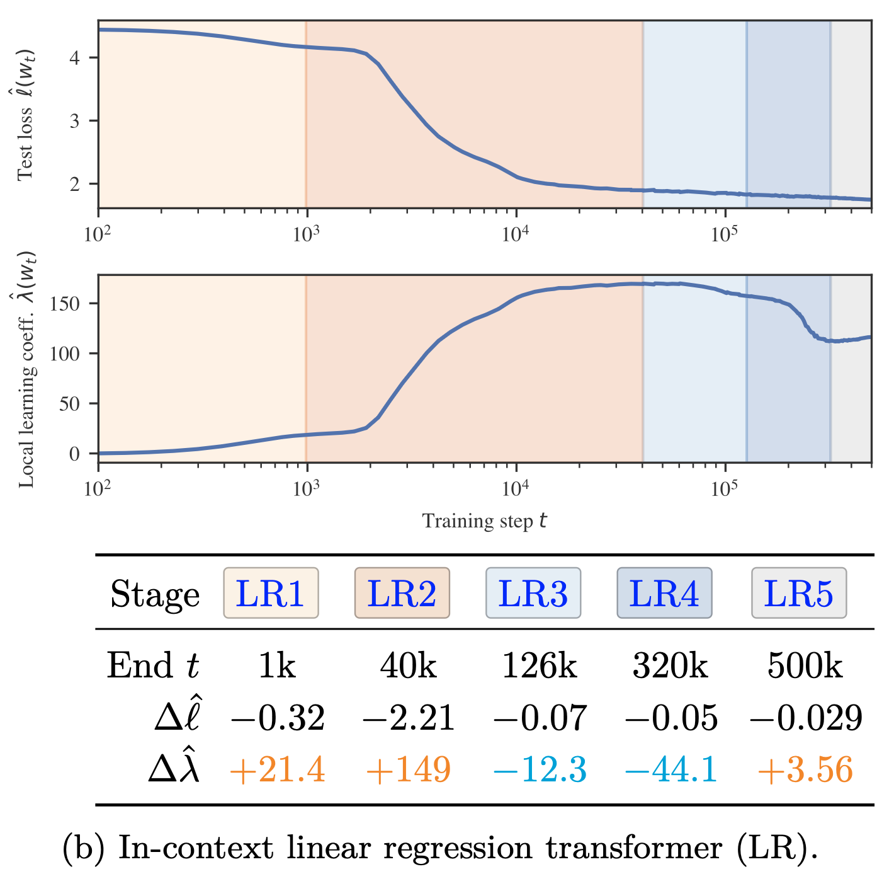
(a) Per-token prediction norms $\mathbb{E}[\|\hat{y}_k\|^2]$ across context positions $k$.
Initially, the model predicts zero at all positions — the safest prior when you know nothing about the task.
As training progresses, predictions grow, but remain position-invariant early on: the model hasn't yet learned that later positions (more context) should produce better predictions.
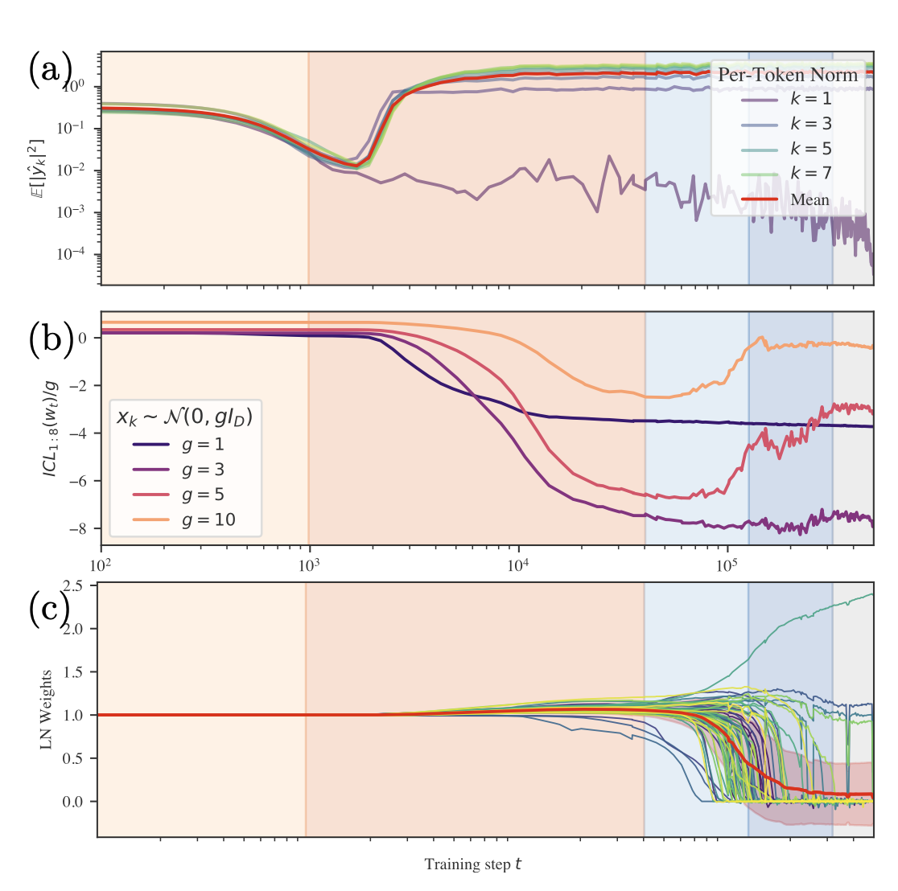
(b) In-context learning score across training, evaluated at different levels of distributional shift ($g$).
$g = 1$ is the training distribution. Higher $g$ = inputs drawn from a wider distribution — testing out-of-distribution generalization.
In LR2, ICL performance improves across all $g$ values — the model learns a general regression algorithm that transfers to unseen scales.
This is the ridge regression phase — a simple, robust algorithm that generalizes broadly.
As the model loses complexity (LLC drops in LR4–5), it begins to lose out-of-distribution ICL performance as well.
Higher $g$ values degrade first — the model is specializing to the training distribution at the expense of general-purpose regression.
The transient ridge solution is being dismantled and replaced by a narrower algorithm tuned to the specific training data.
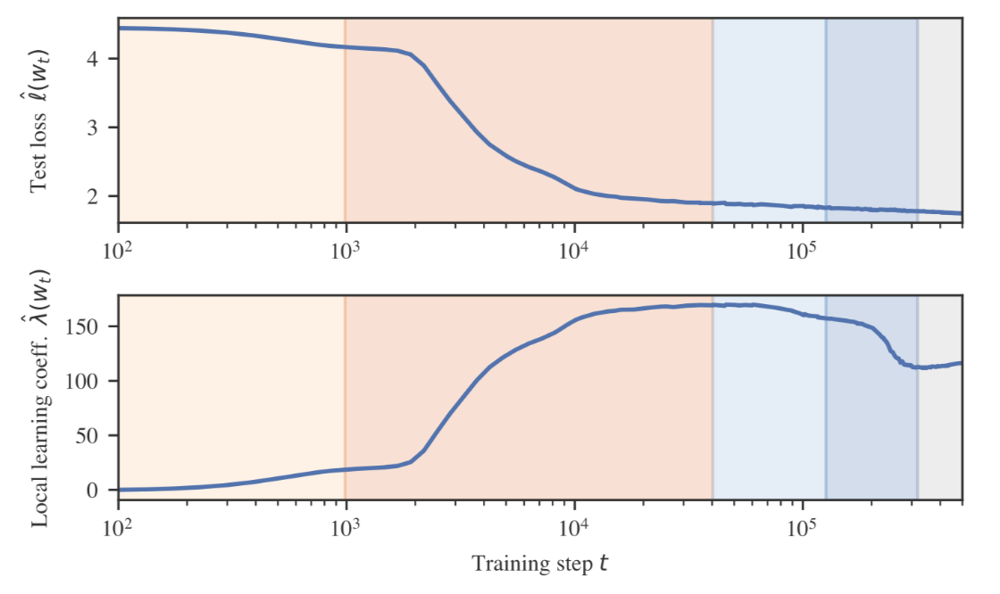
(c) Layer-norm weights over training.
In LR4–5, layer-norm weights collapse toward zero for many dimensions.
This directly corresponds to the LLC decrease — fewer active dimensions means fewer "directions that matter" in parameter space.
The model is effectively pruning its own capacity, trading the general-purpose ridge solution for a specialized one with fewer degrees of freedom.
During LR4–5, the token embeddings reorganize:
Orthogonality traded for compression: tighter fit to training, less OOD capacity.
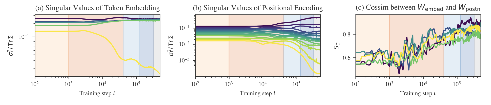
Investigated: Whether SLT-predicted phase transitions correspond to observable changes in model behavior — in both language modeling and in-context regression.
Found:
Tells us: Development is real, observable, and structured. The LLC is a reliable signal for when to look — the behavioral probes tell you what happened.
The regression results demonstrate something striking from a language acquisition perspective:
The model is effectively solving the subset problem — even if maladaptively. It finds a general solution first, then without negative evidence, free-energy dynamics and optimizer noise push it out of a superset solution and into a subset of the problem.
The trajectory — zero → generalize → sub-generalize — mirrors a Chomskyan approach to parameter setting, which posits that learners progress through a none → all → some pattern.
This is a general learner navigating its way out of the poverty-of-the-stimulus problem — free energy dynamics and optimizer noise provide the mechanism to escape overly general minima, without requiring negative evidence. The geometry of the hypothesis space does the work.
Chen et al. and Hoogland et al. give us a complete picture of when transitions happen and how complex the model becomes. The LLC marks the boundaries; the Recipe tells us how to act on them.
What's still missing: which data drives the transitions? Lee et al. take this question to two settings:
If influence dynamics align with the LLC-detected transitions, we have a unified picture: the LLC tells us when, the BIF tells us which.
From Saxe, McClelland & Ganguli 2019: a 2-layer deep linear neural network that learns to map item identity (a one-hot vector) to a vector of features .
Concretely, what does the data and the network look like?
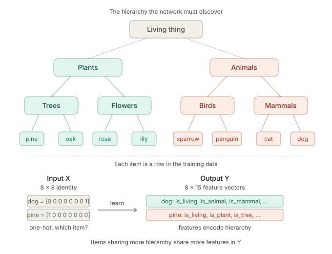
The data has a clear similarity structure — because items inherit features hierarchically, the item-by-item similarity matrix shows nested blocks (animals vs plants, then mammals vs birds, ...).
Saxe et al. showed the network learns these distinctions in stages as loss decreases — first the coarsest split, then progressively finer ones, ending at item-level differentiation .
This tells us when categorical distinctions emerge. But it doesn't tell us about the dynamics between items at each stage — which items are competing for representational room, which are being held together. That's what BIF can show us.
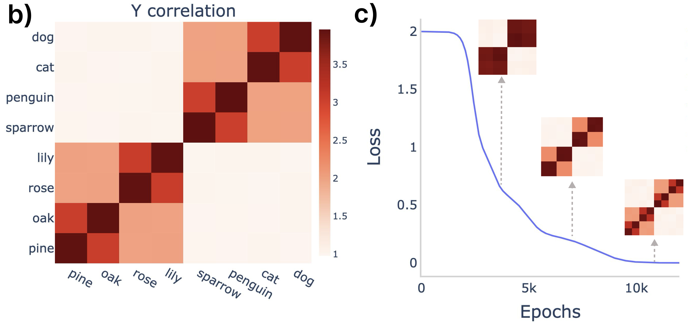
The classical influence function hands you one number per (sample, observable) pair, computed at the end of training:
We need something Hessian-free and defined throughout training.
At any checkpoint, ask a simple question: if the weights were slightly different, would dog's loss and cat's loss move in the same direction?
SGLD samples nearby weight configurations. At each, you measure both losses. Their covariance across the sample is the BIF .
No Hessian inverse. Well-defined at any checkpoint. And mathematically, it's a susceptibility — the kind of quantity that diverges at phase transitions.
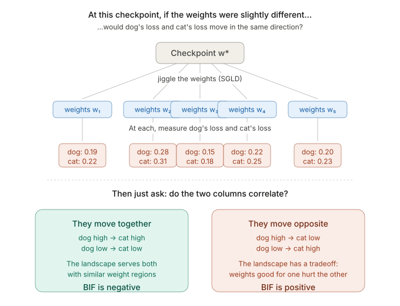
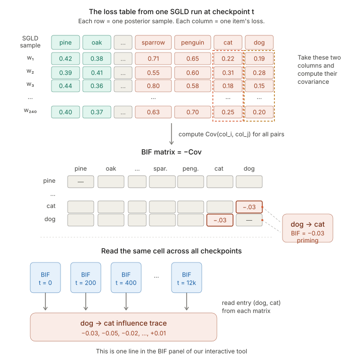
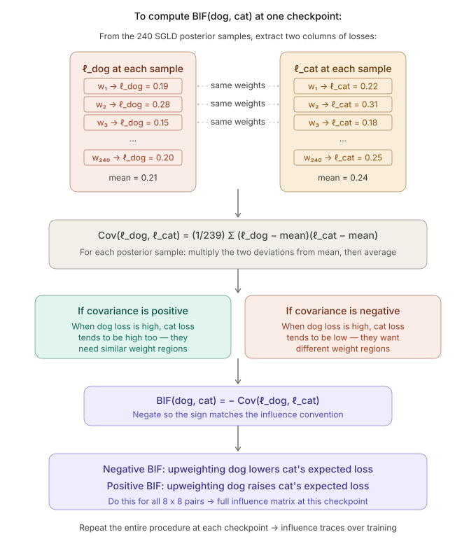
If influence is a susceptibility, then at a phase transition where the posterior splits between two phases $\mathcal{U}$ and $\mathcal{V}$, decomposing the BIF via the law of total covariance gives two concrete predictions:
These are the signatures to look for as we walk through the toy model dynamics.
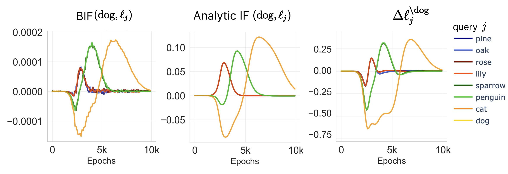
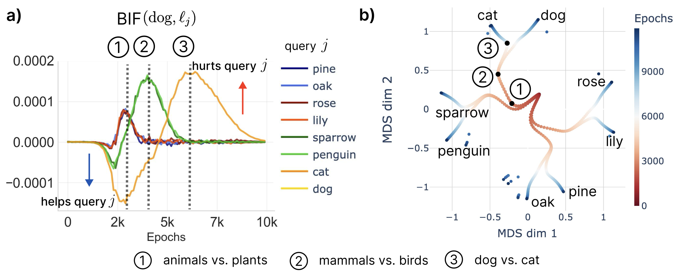
The toy model showed BIF tracking exactly the developmental story Saxe predicted. The harder test: does the same machinery work on a real language model trained on real text?
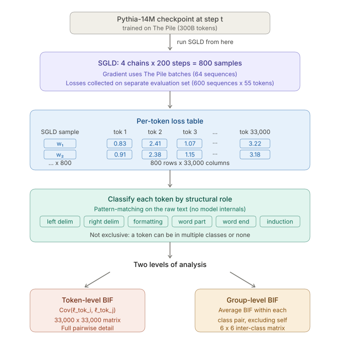
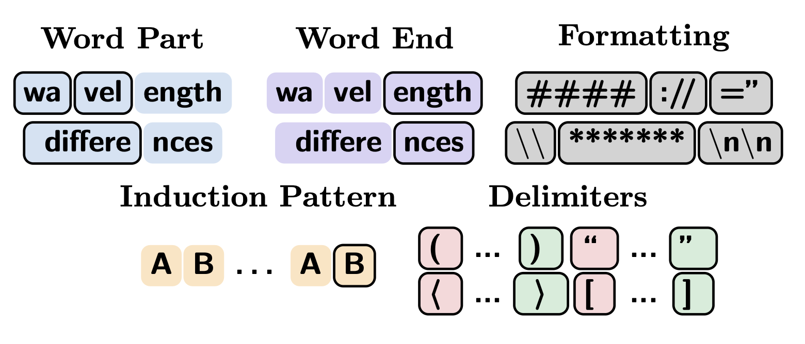
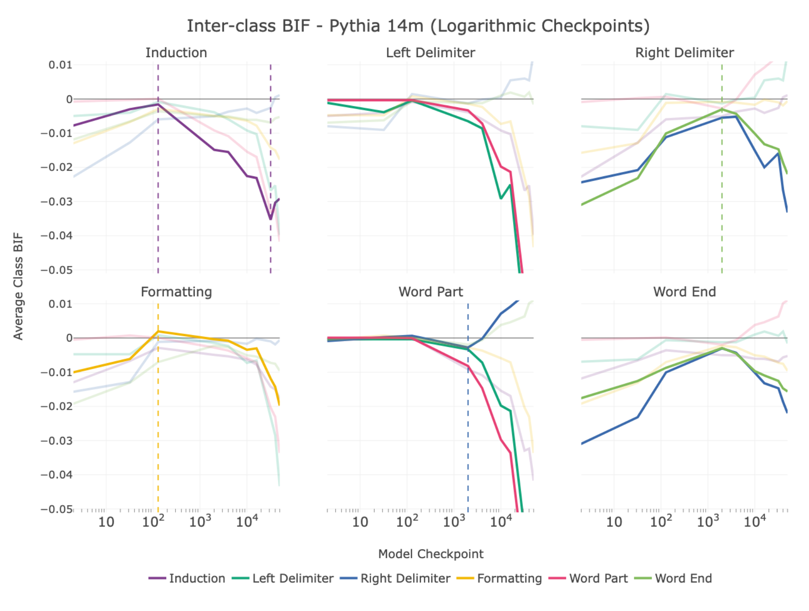
A 3M-parameter model trained six times with identical initialization and data ordering — only the timing of induction-pattern token upweighting (4×, in a 500-step window) differs. Same data, different timing.
BIF dynamics on the unweighted baseline predict the effect. Upweighting before the BIF transition (when influence is flat or rising) delays or disrupts induction-circuit formation. Upweighting during the BIF descent accelerates it — heads form as early as step 5k versus ~7k in the baseline.
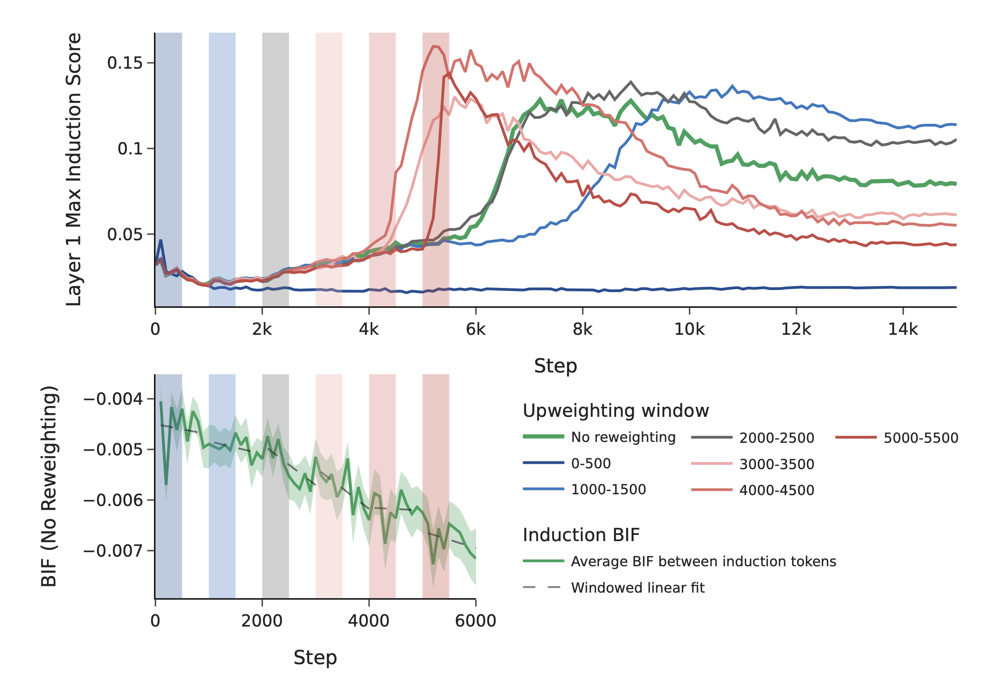
The natural application: take this framework to a real question about syntactic acquisition. BabyLM (~100M words, English-only) is small enough that dense checkpointing and leave-one-out training are computationally feasible — and it already has the infrastructure we'd need:
Connection to my own work: I do controlled rearing studies — leave-one-out at the corpus level — to investigate the learning contribution of specific linguistic evidence. BIF would give the forward-exploratory tool to identify where to look before committing to expensive retraining runs. The two methods are complementary.
The contribution isn't a new linguistic finding — it's a toolkit. Other researchers can apply the same pipeline to their own constructions of interest.
We started with a problem: classical learning theory can't explain why neural networks learn in jumps. We finished with a methodology that can — and the beginnings of one that can intervene on it.
Developmental interpretability has gone from describing stagewise learning to intervening on it. The next question is how to take that machinery to the questions we care about as linguists.